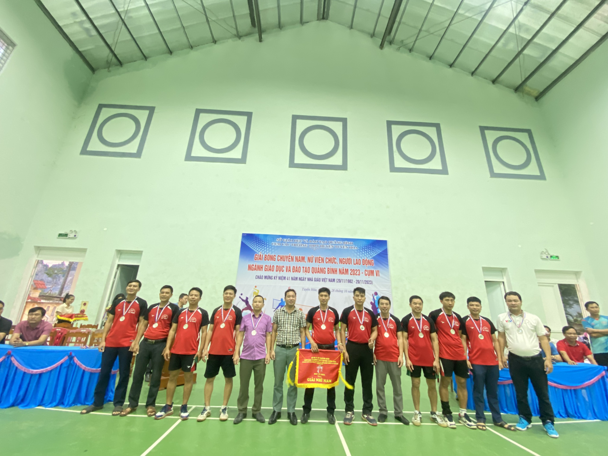

Thực hiện kế hoạch số 2236/KH- BTC ngày 19 tháng 10 năm 2023 của BTC giải bóng chuyền nam, nữ công chức, viên chức, người lao động ngành GDDT Quảng Bình năm 2023, từ ngày 27 đến ngày 28/10/2023 tại nhà thi đấu TDTT trường THPT Lê Trực đã diễn ra giải bóng chuyền nam, nữ công chức, viên chức, người lao động ngành GDDT Quảng Bình năm 2023 cụm VI( khối trực thuộc).
Tham dự giải có 5 đội bóng nam (THPT Lê Trực, THPT Phan Bội Châu, THPT Tuyên Hóa, THCS và THPT Bắc Sơn và trung tâm GDNN_GDTX Tuyên Hóa) và 3 đội bóng nữ (THPT Lê Trực, THPT Phan Bội Châu, THPT Tuyên Hóa) với tổng số 96 vận động viên tranh tài ở hai nội dung bóng chuyền nam và bóng chuyền nữ. Các đội đã thi đấu nhiệt tình, sôi nổi, đẹp mắt với quyết tâm giành kết quả tốt nhất.
Giải là các hoạt động thiết thực chào mừng kỷ niệm 41 năm ngày Nhà giáo Việt Nam(20/11), góp phần đẩy mạnh phong trài tập luyện TDTT, rèn luyện sức khỏe, năng cao đời sống vật chất, tinh thần và động viên đội ngũ cán bộ quản lý, giáo viên, nhân viên thi đua yêu nước, phấn đấu hoàn thành xuất sắc nhiệm vụ năm học 2023-2024.
Kết thức giải, ở nội dung bóng chuyèn nam, giải nhất thuộc về đội trường THPT Phan Bội CHâu; giải nhì thuộc về đội THPT Lê Trực; đồng giải ba là các đội THPT Tuyên Hóa và trung tâm GDNN-GDTX Tuyên Hóa; đội Bắc Sơn đạt giải phong cách.
Nội dung bóng chuyền nữ, giải nhất thuộc về đội THPT Phan Bội CHâu; gải nhì thuộc về đội THPT Lê Trực; giải ba thuộc về đội THPT Tuyên Hóa.

 Ban tổ chức đã trao cờ, cúp vô địch và Huy chương Vàng cho 2 đôi Nhất; trao Cờ và huy chương bạc cho 2 đội Nhì; Cờ và huy chương đồng cho các đội đạt giải Ba.
Ban tổ chức đã trao cờ, cúp vô địch và Huy chương Vàng cho 2 đôi Nhất; trao Cờ và huy chương bạc cho 2 đội Nhì; Cờ và huy chương đồng cho các đội đạt giải Ba.